01
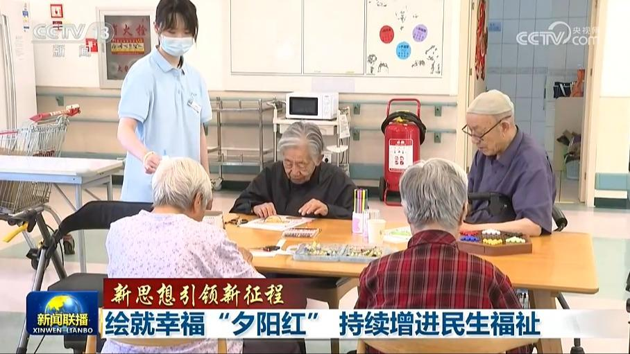
【新思想引领新征程】绘就幸福“夕阳红” 持续增进民生福祉
养老既是家事，也是国事。习近平总书记指出，我国已经进入老龄社会，让老年人老有所养、生活幸福、健康长寿是我们的共同愿望。党中央高度重视养老服务工作，要把政策落实到位，惠及更多老年人。落实总书记要求，各地加快推进养老事业多元化、多样化发展，用心用情做好养老服务，持续增进民生福祉。


养老既是家事，也是国事。习近平总书记指出，我国已经进入老龄社会，让老年人老有所养、生活幸福、健康长寿是我们的共同愿望。党中央高度重视养老服务工作，要把政策落实到位，惠及更多老年人。落实总书记要求，各地加快推进养老事业多元化、多样化发展，用心用情做好养老服务，持续增进民生福祉。
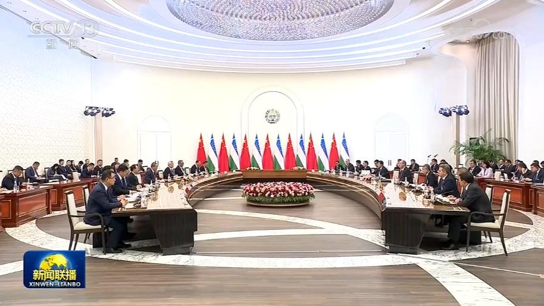
当地时间10月17日下午，国务院总理李强在塔什干同乌兹别克斯坦总理阿里波夫举行会谈。
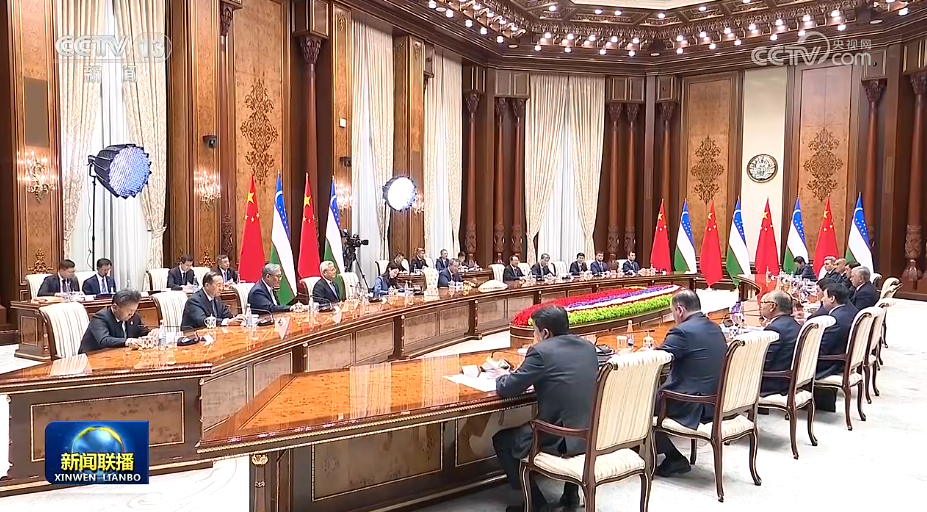
当地时间10月17日，国务院总理李强在塔什干会见乌兹别克斯坦总统米尔济约耶夫。
当地时间18日中午，国务院总理李强乘包机抵达杜尚别国际机场，应塔吉克斯坦总理拉苏尔佐达邀请，对塔吉克斯坦进行正式访问并将出席上海合作组织成员国政府首脑（总理）理事会第二十五次会议。
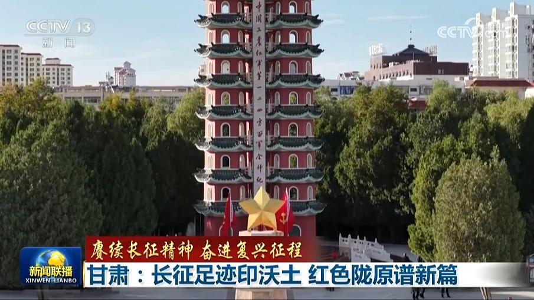
甘肃是参加长征的各路红军转战时间较长的省份，也是红军三大主力大会师的核心区域。站在新的历史起点，陇原儿女赓续红色血脉，奋力谱写中国式现代化甘肃篇章。
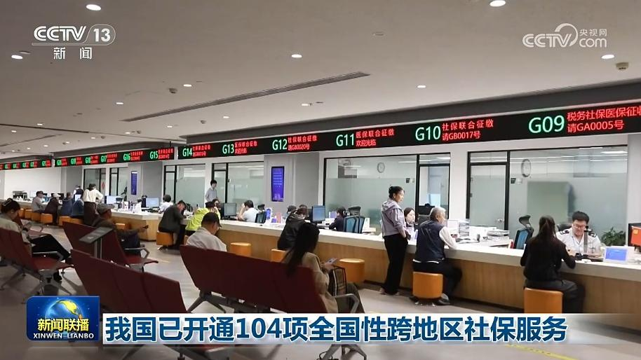
记者从人力资源社会保障部了解到，截至目前，国家社保公共服务平台已开通104项全国性、跨地区服务，累计服务113.53亿人次。
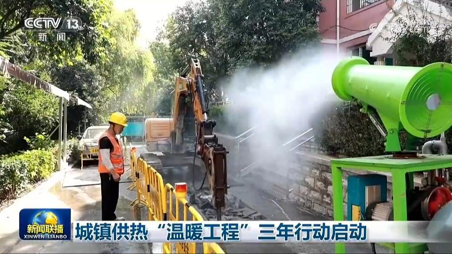
住房城乡建设部、国家发展改革委等六部门日前联合印发城镇供热“温暖工程”三年行动方案，明确到2028年底前，存量供热老化管网更新改造取得明显进展。
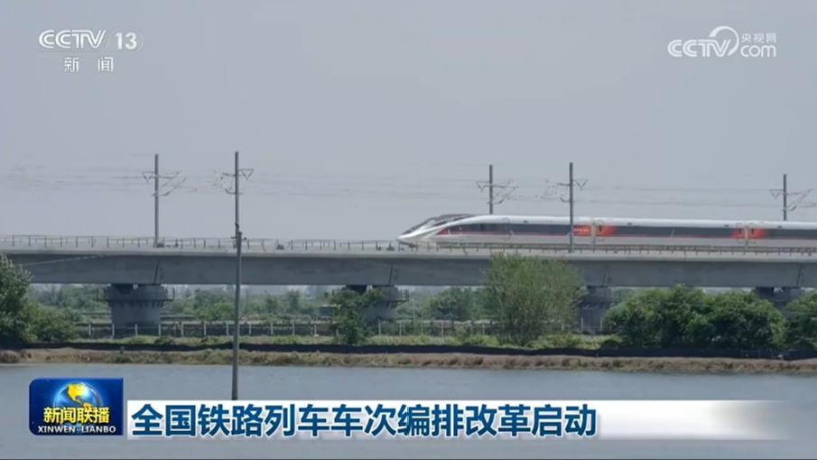
随着我国铁路路网持续扩容、新装备新产品不断投用，沿用多年的全国铁路车次编排近日迎来系统性变革。
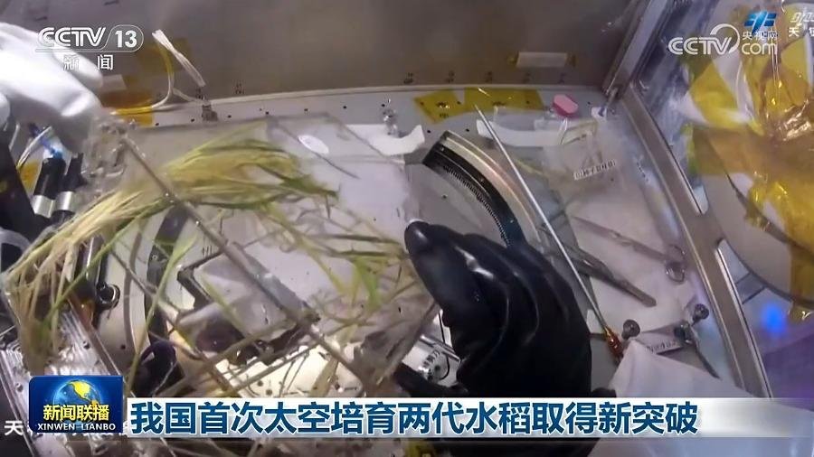
目前，神舟二十三号航天员乘组已在轨超过4个月，他们在中国空间站完成了新一批水稻实验样品的采集等工作，我国首次太空培育两代水稻取得新突破。
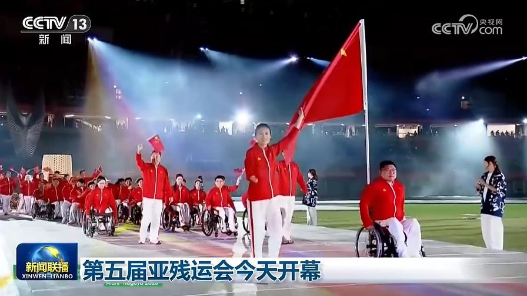
第五届亚洲残疾人运动会今天（10月18日）在日本开幕。开幕式上，男子残疾人举重运动员闫盼盼、女子残疾人跆拳道运动员李羽洁担任中国体育代表团旗手，引领代表团入场。
今年1.3万亿元超长期特别国债发行完毕
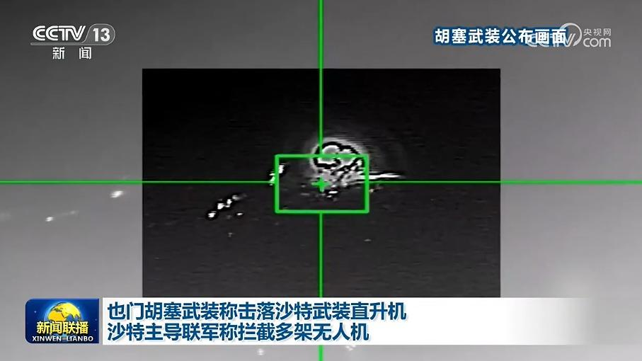
也门胡塞武装17日表示，过去24小时，沙特阿拉伯战机对首都萨那等地发动了53次空袭，其中西南部塔伊兹省遭袭造成9人死亡。胡塞武装还称，该组织当天击落一架在沙特奈季兰附近地区实施敌对行动的沙特武装直升机。
俄称击落上千架无人机 乌称变电站遭袭
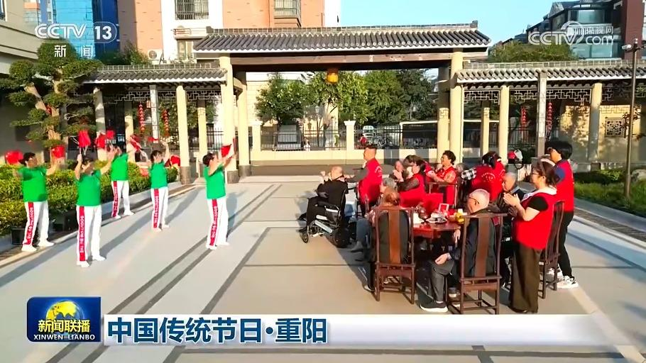
重阳节是中国人敬老孝亲的节日。节目的最后，我们一起了解重阳节的文化内涵，感受中国传统节日之美。